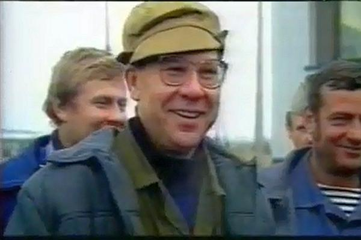

Человек, который спас миллионы людей, ценой собственной жизни

Валерий Легасов среди ликвидаторов
Краткая биография
Родился 1 сентября 1936 года в Туле, в семье служащих.
В 1949—1954 годах учился в школе № 56 в Москве, окончил её с золотой медалью. Сейчас школа носит его имя, также у главного входа стоит его бронзовая статуя
В 1961 году окончил МХТИ имени Д. И. Менделеева. В течение двух лет работал освобождённым секретарём комитета ВЛКСМ Московского химико-технологического института им. Д. И. Менделеева, избирался в бюро Советского райкома комсомола и в Московский городской комитет ВЛКСМ. После окончания института в течение полутора лет по распределению работал на Сибирском химическом комбинате в городе Томск-7 инженером, начальником смены.
С 1964 года учился в аспирантуре в отделении молекулярной физики Института атомной энергетики имени И. В. Курчатова, затем там же работал младшим и старшим научным сотрудником, начальником лаборатории.
В 1967 году защитил кандидатскую диссертацию по синтезу соединений благородных газов и изучению их свойств.
В 1972 году защитил докторскую диссертацию (доктор химических наук), был назначен заместителем директора по научной работе Института атомной энергии имени И. В. Курчатова.
В 1978—1983 годах был профессором МФТИ, с 1983 года и до момента ухода из жизни работал на химическом факультете МГУ, заведовал кафедрой радиохимии и химической технологии, а также возглавлял экспертный совет ВАК СССР.
С 1983 года работал в должности первого заместителя директора Института атомной энергии имени И. В. Курчатова.
В 1986 cразу после аварии на Чернобыльской АЭС Легасов был назначен членом правительственной комиссии по расследованию причин и по ликвидации последствий аварии. Он появился на месте катастрофы одним из первых и провёл там в общей сложности 60 суток. Полученная значительная доза радиации, в 4 раза превышающая максимально допустимую норму, очень сильно повлияла на его здоровье
С 25 по 29 августа 1986 года на конференции экспертов МАГАТЭ в Вене Легасов, как глава советской делегации, представил 5-часовой 400-страничный доклад с анализом причин аварии и радиологических последствий катастрофы на ЧАЭС.
В 1987 году при тайном голосовании академика Легасова не избрали в научно-технический совет (100 — за, 129 — против). В 1986—1987 годах его дважды выдвигали на звание Героя Социалистического Труда, но оба раза он не был награждён.
После разбора причин аварии Легасов вернулся к изучению вопроса безопасности ядерных реакторов, в том числе указывал проектировщикам на недостатки реакторов типа РБМК, а также на неудовлетворительную профессиональную подготовку сотрудников АЭС.
Во вторую годовщину аварии на ЧАЭС, 26 апреля 1988 года, Легасов представил на заседании Академии наук план создания совета по борьбе с застоем в советской науке. Его предложение было отклонено. На следующий день, 27 апреля 1988 года, Легасов был найден у себя в квартире повесившимся. По одной из версий, причиной самоубийства стало давление официальных властей СССР на ход расследования Чернобыльской катастрофы и атмосфера тотальной секретности.
Когда кругом кричали: «Дальше, выше, быстрее!», — Валерий Алексеевич призывал задуматься: «А какой ценой?»
Вы можете подробнее ознакомиться с биографией этого выдающегося учёного на Википедии.